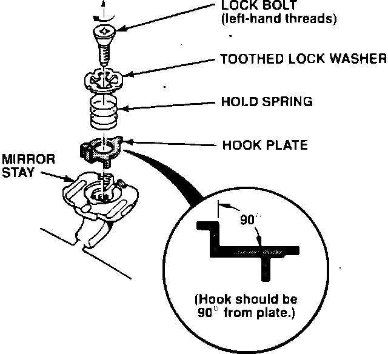
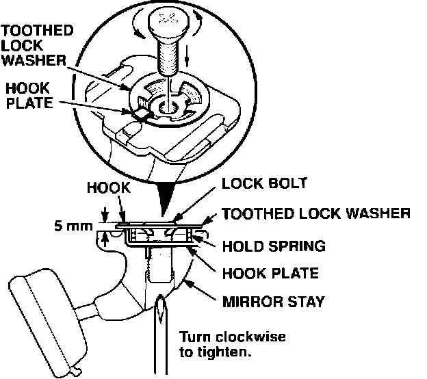

Rearview Mirror - Reinstallation Procedure
BULLETIN NO.92-039
YEAR
1992 - 93
1991 - 93
1991 - 93
MODEL
VIGOR
LEGEND
NSX
VIN APPLICATION
ALL
December 8, 1992
Rearview Mirror Reinstallation
PROBLEM
The rearview mirror may be accidentally knocked off the windshield lug and some of the internal parts can be broken or lost.
CORRECTIVE ACTION
Replace any missing or damaged parts (see PARTS INFORMATION), and reinstall the rearview mirror.
1. Remove the lock bolt from the mirror stay as described in the appropriate service manual.

2. Inspect the hook plate. If the hook plate is distorted, bend it to its original 90~ position.
3. Inspect the lock bolt, the toothed washer, and the hold spring. Replace any parts that are missing, broken, or distorted (see PARTS INFORMATION).

4. Loosely install the hook plate, hold spring and the toothed washer to the mirror stay using the lock bolt. Make sure the hook plate is over the top of the toothed washer. Thread in the lock bolt until the toothed washer is approximately 5 mm from the mirror stay.
5. Install the mirror on the windshield lug, and torque the lock bolt to 2.0-3.0 N-m (20-30 kg-m, 14-22 lb.ft.).
PARTS INFORMATION
Vigor and NSX
Description P/N
Lock bolt 76410-SL4-003
Toothed washer 76409-SL0-003
Hold spring 76409-SP0-A01
Legend
Description P/N
Lock bolt 76410-SL4-003
Toothed washer 76410-SP0-003
Hold spring 76409-SP0-A01
WARRANTY CLAIM INFORMATION
In warranty:
The normal warranty applies.
Out of warranty:
Any repair performed after warranty expiration may be eligible for goodwill consideration by the District Service Manager. You must request consideration, and get the DSM's decision, before starting work.
Operation number:
828155
Flat rate time:
0.2 hour
Failed P/N:
P/N 76400-SPO-A01ZA
Defect code:
018
Contention code:
B99